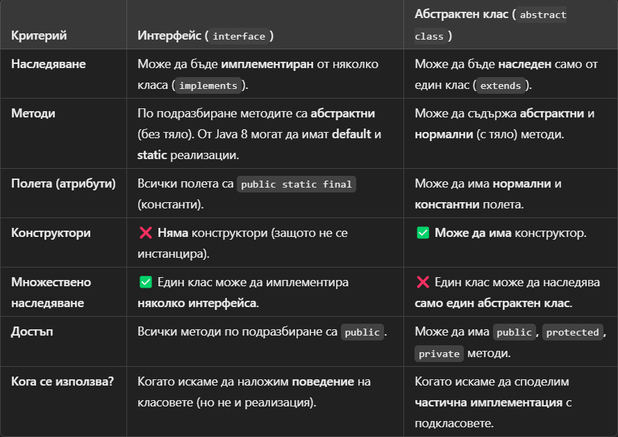

Упражнение № 4
ООП (част 2)
- Абстрактен клас:
- Не може да се създават обекти от тип абстрактен клас. Дефинира се с ключовата дума
"abstract". Всеки клас, който има поне един абстрактен метод, трябва да бъде деклариран
като абстрактен. Обратното не е в сила - може да се дефинира абстрактен клас без той да
съдържа абстрактни методи вътре в себе си. Абстрактните класове могат да съдържат в себе
си, както абстрактни, така и други методи.
- Абстрактен метод:
- Mетод без тяло, само с декларация. Дефинира се с ключовата дума "abstract".
- Чист абстрактен клас
- Съдържа в себе си само абстрактни методи. Не може да съдържа член-променливи.
- Виртуален метод
- Метод, който може да бъде пренаписан (override). По подразбиране всички методи в Java са
виртуални. Ако не искаме да бъдат такива ги дефинираме с ключова дума final. Тогава
никой клас-наследник няма да може да пренапише този метод.
- Интерфейс
- Дефинира поведение без изрична имплементация. Един клас може да имплементира много
интерфейси (използва се ключова дума "implements"). В интерфейсите може да има само
абстрактни методи и константи. Дефинира се с ключовата дума "interface". Класът, който
имплементира интерфейс трябва да имплементира всички методи от интерфейса. Изключение
прави абстрактният клас, той може да имплементира нула, един, няколко или всички методи
от интерфейса, а всички останали методи се имплементират в класовете наследници на този
абстрактен клас. Най-добрият начин да се реализира абстракция е да се работи с
интерфейси.
- Разлики между интерфейс и абстрактен клас
- Интерфейсите са по-гъвкави, защото позволяват множествена имплементация.
- Абстрактните класове са полезни, когато има споделена логика.
- От Java 8, интерфейсите могат да имат default методи, което намалява нуждата от
абстрактни класове.
Интерфейс срещу абстрактен

- Списъчни структури от данни
- ArrayList – Базиран на масив (бързо четене, бавно вмъкване/изтриване).
- LinkedList – Свързан списък (бързо вмъкване/изтриване, бавно търсене).
- Vector – Подобен на ArrayList, но синхронизиран.
- Stack – Реализира стека (LIFO – Last In, First Out).
- Класът ArrayList
- Динамично разширяем масив. Важни методи: get(), add(), remove(), clear().